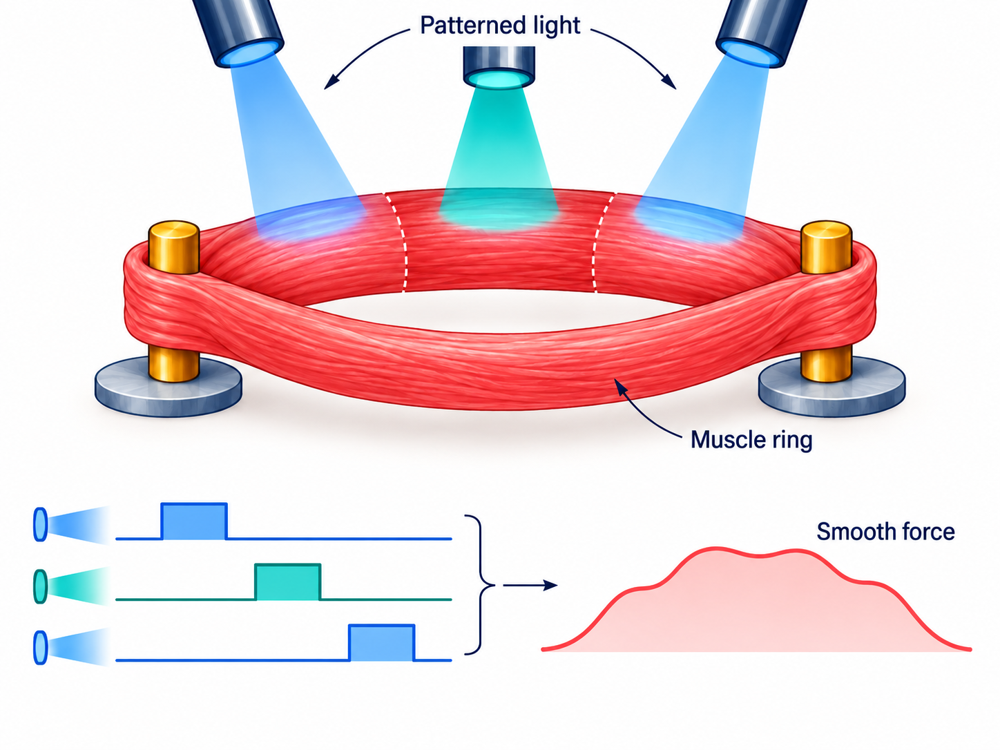
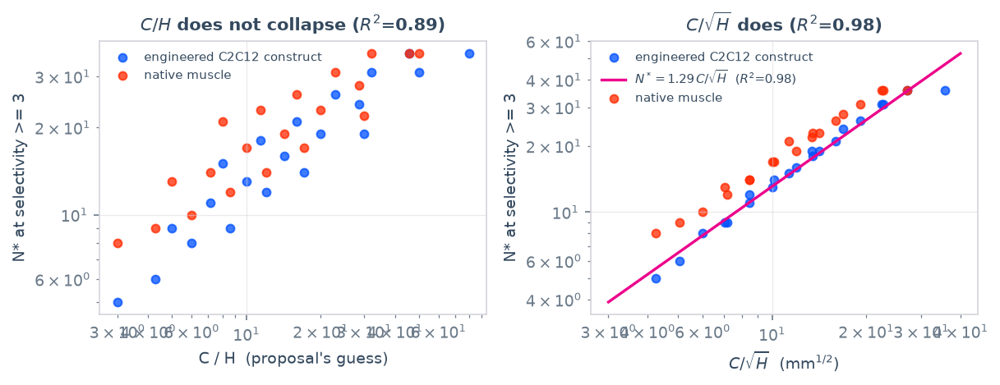

From light to force
The pipeline connects optical transport, opsin dynamics, excitation–contraction coupling, muscle mechanics and fatigue. Spatial patterns drive different sectors of a muscle ring, allowing their contractions to be interleaved instead of stimulating the whole ring at once.

Calibration changed the conclusion
Refitting the model to deposited measurements overturned the proposed endurance advantage: the median force-retention ratio was 0.997 against a tuned global stimulus. The previously large benefit from concentrating activation also shrank to at most 1.028×. Those hypotheses are not supported by the calibrated model.
The surviving benefit
At the matched smoothness criterion, global stimulation operates between 88% and 100% of its maximum force. Spatial stimulation reaches 24%, extending the range downward by a factor of 3.9. The benefit is asynchronous force smoothing, bounded by the number of independently addressable sectors in the optical model.
Scope
All results are computational; there is no wet-lab validation. The optical scaling fit describes the tested geometries, and the study does not establish a general scaling law between sector count and the minimum smooth force.